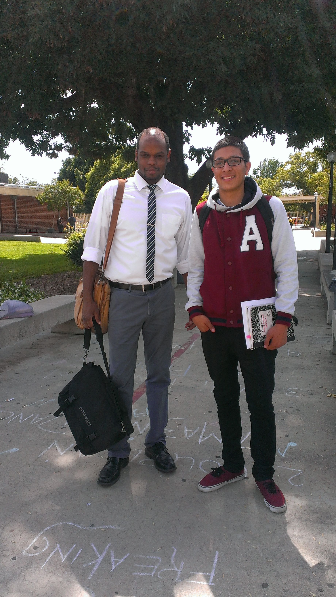

 Here is an image of my high school teacher and I during my senior year. His name is Randell Rodgers and he has encouraged me to do my best in school by motivating me with words and his passion for helping students. He has always had a connection with his students inlcuding myself. I had him for chemistry my junior year, as well as for a video production class that he was currently teaching at the time. It was great seeing how enthusiastic he was about chemistry. The labs we conducted in his class were you beyond interesting and nothing like any other science class I've taken, because the labs were very intuitive.